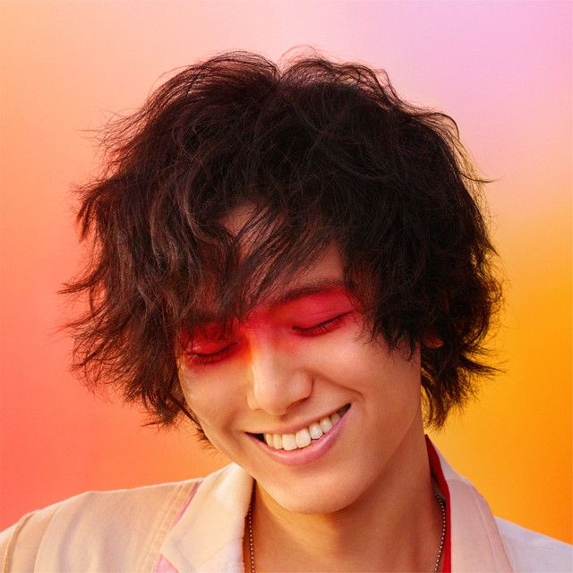

LOVE ALL SERVE ALL
Released March 23th 2022
Credits:
- Arranged by [Sound Produced] - Yaffle (2)
- Written by, vocals - Fujii Kaze
"LOVE ALL SERVE ALL" released in May 2020, while the coronavirus was raging all over the world, Kaze Fujii made a brilliant debut with his debut album "HELP EVER HURT NEVER" with the core message of "always help, never hurt". In September last year, [Fujii Kaze "Free" Live 2021 at NISSAN stadium] was held without spectators, hoping that various people's hearts would become "free". In rainy weather, the stage of only piano and singing will be broadcast live worldwide on YouTube for 1 hour at one of the largest outdoor stadiums in Japan, and will be distributed on Twitter.


Side One
- きらり (Kirari)
- まつり (Matsuri)
- へでもねーよ (Hedemo Ne-Yo)
- やば。(YABA)
- 燃えよ (MO-EH-YO)
- ガーデン (Garden)
Side Two
- damn
- ロンリーラプソディ (Lonely Rhapsody)
- それでは、(By For Now,)
- "青春病" (Seishun Sick)
- 旅路 (Tabiji)
- “Hedemo Ne-Yo,” “Seishun Sick,” “Tabiji” and “Kirari” (streamed over 200 million times).
- The project contains 11 tracks, with six new songs added to the previously released “Hedemo Ne-Yo,” “Seishun Sick,” “Tabiji” and “Kirari” (streamed over 200 million times) and “MO-EH-YO,” the number the breakout star performed live as a surprise on the year-end 72nd NHK Kohaku Uta Gassen.
- Love All Serve All
- The new project will contain 11 tracks, with six new songs added to the previously released.